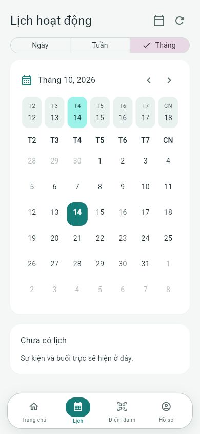
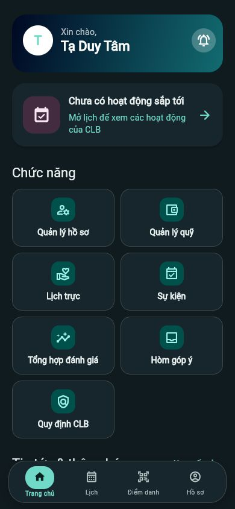

Chủ động với lịch
Xem ngày, tuần, tháng. Đăng ký sự kiện, buổi trực và xem những người cùng trực.
CLB AI-ROBOTICS · TRỰC THUỘC DNTU
Lịch hoạt động, đăng ký trực, điểm danh và đóng quỹ. Một nơi để thành viên theo dõi và cùng nhau xây dựng CLB.
Ứng dụng nội bộ. Tài khoản được BCN/Admin cấp cho thành viên.


XEM TRƯỚC ARC
Ảnh chụp trực tiếp từ client kết nối API của CLB. Chọn một màn hình rồi nhấn ảnh để xem lớn.
Trang chủ phân bố theo vai trò. Thành viên và BCN/Admin có các chức năng phù hợp với tài khoản.
Chụp từ ARC · 14/10/2026THIẾT KẾ CHO THÀNH VIÊN
Xem ngày, tuần, tháng. Đăng ký sự kiện, buổi trực và xem những người cùng trực.
Quét QR hoặc nhập PIN. Vị trí được kiểm tra trong cả hai cách điểm danh.
QR theo số tiền và nội dung của bạn. Gửi minh chứng cho tháng hiện tại hoặc tháng cần đóng bù.
Hồ sơ, quy định CLB và hòm góp ý. BCN quản lý tập trung trong giao diện riêng.
BẮT ĐẦU VỚI ARC
CHỌN NỀN TẢNG CỦA BẠN
Đang kiểm tra bản tải mới nhất…
QR mở liên kết tải. Bạn cần xác nhận cài đặt trên thiết bị; website không thể tự cài ứng dụng.
Các bản phát hành và SHA-256 ↗TRƯỚC KHI CÀI ĐẶT
ARC hiện phát hành dưới dạng thử nghiệm. Android, Windows và macOS chưa có đầy đủ chữ ký phân phối. iOS cần IPA đã ký và provisioning hợp lệ trước khi có thể cài.
Tải từ các liên kết chính thức tại đây và đối chiếu SHA-256 trong release. Không tắt bảo vệ thiết bị để cài app.
HỖ TRỢ THÀNH VIÊN
Đầu mối phụ trách: Harashi Yowshi.
HarashiYowshi@gmail.com ↗Dữ liệu lưu không thời hạn; yêu cầu xóa được xác minh và xử lý qua đầu mối hỗ trợ.
Điều khoản và quyền riêng tư